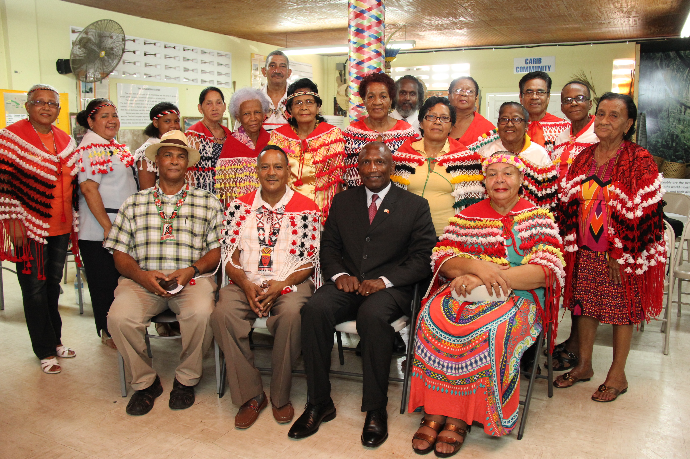

The directory/Santa Rosa First Peoples Community (Trinidad)

Public diplomatic group at Santa Rosa First Peoples Community, 11 August 2016Embassy of the United States in Trinidad and Tobago, 11 August 2016. Individual photographer not named. Wikimedia Commons item identifies an official-duty U.S. Department of State employee photograph, in the public domain in the United States.
First Peoples community organization · Added to the original list
Santa Rosa First Peoples Community (Trinidad)
Also find this entry through: Santa Rosa First Peoples Community
Santa Rosa is a named First Peoples community organization in Arima, Trinidad. Its public sources connect heritage work, language learning, education and requests for recognition. This starting guide keeps those particular perspectives distinct from all Indigenous peoples of Trinidad and Tobago.
See each region’s evidence for historical or present-day scope.
Homeland / region
Caribbean / Trinidad and Tobago — Arima community-organization context
Research depth
Source guide
Source collection
5 annotated resources · 0 Indigenous-led
Inspected sources
5 substantive works · selected content reviewed
Initial adequacy
Still unfinished
Source review
October 29, 2026
Names & relationshipsThe 2022 parliamentary report identifies this community organization at Arima and attests Santa Rosa Carib Community as its earlier name. It is distinct from California’s Santa Rosa governments; no relationship to those governments is inferred.
A source guide for a deeper dive.This entry provides a brief orientation and an organized reading path. A comprehensive deep dive has not yet been completed. Follow the annotated sources and distinguish primary community accounts from outside reference material.
Still unfinished
Selected actual-content sources and a specifically scoped credited image provide a starting route. Fuller histories and comparison remain open; quantity does not establish completion or endorsement.
Assessment recorded October 29, 2026. This is separate from research completion and community review.
Develop a community-led or appropriately scoped historical introduction and an annotated actually inspected reading collection.
Verify individually relevant imagery, creator and reuse terms before a substantive guide is published.
Verify fuller naming, organizational relationships and present-day context; identity checks do not establish ancestry, membership, representation, jurisdiction or community endorsement.
Seek fuller community-authored history and contemporary institutional context.
The photograph documents a 2016 public group, not present leadership; fuller community-directed historical and contemporary context remains open.
Backdrop photographs & credits
These photographs have individual, documented connections to this entry. Their captions and source records define the people, place, object, and period shown; no one photograph represents every community within a broader label.
Public diplomatic group at Santa Rosa First Peoples Community, 11 August 2016 Embassy of the United States in Trinidad and Tobago, 11 August 2016. Individual photographer not named. Wikimedia Commons item identifies an official-duty U.S. Department of State employee photograph, in the public domain in the United States.
The public item identifies this particular Santa Rosa community group in Arima during an 11 August 2016 diplomatic visit. It is a dated posed public group photograph, not a ceremony, a portrait of every member, a statement of present leadership, citizenship, endorsement or exclusive Indigenous representation.
Image, association, and reuse record reviewed 2026-10-29.
Full photographs are displayed proportionally above. A translucent background copy may be cropped by the viewport; it does not replace the complete image or its record.
The visual treatment does not change the research status, evidence, or remaining gaps recorded in this profile.
01
An Arima community and a public historical tradition
The National Archives’2017 festival board connects the Santa Rosa celebration in Arima with the former mission village and its patron saint. This describes a particular public historical tradition, not every community member’s religion.
A STAN feature discusses Santa Rosa members’ interest in learning Lokono and Kari’ña, alongside Patois heritage. The undated article presents one perspective; language ability does not establish membership or determine whether a people continues to exist.
UWI’s2016 History Fest account presents Santa Rosa participants as contributors to historical discussion. Its2019 workshop report documents legal-education work involving named community presenters. These are specific collaborations, not measured community-wide outcomes.
Santa Rosa’s proposal in the2022 parliamentary report asks for action on representation, land, heritage and language. Those requests must remain distinct from completed policies.
Develop a community-led or appropriately scoped historical introduction and an annotated actually inspected reading collection.
Verify individually relevant imagery, creator and reuse terms before a substantive guide is published.
Verify fuller naming, organizational relationships and present-day context; identity checks do not establish ancestry, membership, representation, jurisdiction or community endorsement.
Seek fuller community-authored history and contemporary institutional context.
The photograph documents a 2016 public group, not present leadership; fuller community-directed historical and contemporary context remains open.
Follow the reading path
Sources & further reading
Open any title to read the original source. Annotations explain what each link can help you explore.
No Indigenous-led source is identified in this entry yet. This is a gap in this collection, and does not imply an absence of community knowledge or organization.
GovernmentParliament of Trinidad and TobagoSource 1
Selected community testimony and its appended policy proposal, with committee responses. Distinguish requests from outcomes.
Inspection: Content reviewed for the stated scope
Scope: Printed/PDF pp17–18,24–26; selected opening testimony p45 and land/village discussion pp47–48; AppendixIV pp74–78. Only these selected bodies and community proposal read.
Review recorded: October 29, 2026
Access note: Selected public body and attributed submissions only, not the entire79-page report or every appendix. A cached normalHTTP200 PDF from the prior identity task was reused for new actual-content reading; today a direct original request returned403 and stopped. Dated testimony, plans and recommendations are not present law, completed transfers, current funding or independently adjudicated facts. No ancestry-purity, exclusive-representation, current-officer or universal-Warao claims adopted.
Selected language-learning discussion treats Santa Rosa interests in Lokono and Kari’ña alongside Patois heritage.
Inspection: Content reviewed for the stated scope
Scope: Actual language feature body, particularly paragraphs corresponding to web lines64–74; surrounding lexical/classification discussion also read, but not all cited papers or recordings.
Review recorded: October 29, 2026
Access note: Article undated; footer2013 is not adopted as a publication date. Old speaker estimates, extinction predictions, current leaders and membership/ancestry implications are excluded. Ceremonial language details and lyrics are not reproduced.
A dated account of Santa Rosa participants contributing to an academic and school programme.
Inspection: Content reviewed for the stated scope
Scope: Actual April2016 article body paragraphs1–7, especially panel participation and school workshop; not linked films, photographs, complete lectures or underlying historical papers.
Review recorded: October 29, 2026
Access note: Institutional retrospective of its own event, not an independent impact evaluation or endorsement of any participant’s authority. Ceremony descriptions and pictures are not reproduced. Present leadership is not inferred.
Documents a legal-education collaboration involving named Santa Rosa presenters.
Inspection: Content reviewed for the stated scope
Scope: Actual2019release main body and About the EDF Human Rights Project. Read event aims, named speakers and legal-education methods; not underlying presentations, case law, legal outcomes or photos.
Review recorded: October 29, 2026
Access note: A dated university account of a February23,2019 workshop. It documents participation and teaching aims, not successful legal protection, a current legal remedy, community-wide views or measured outcomes. No photo reuse.
Two selected exhibition boards connect historical resistance and a mission-era festival with Santa Rosa public remembrance.
Inspection: Content reviewed for the stated scope
Scope: Actual PDF boards7 and9 visually read in rendered images, including headings, body and photo captions. Board8 inspected for exclusion of broad beliefs/ceremonial imagery. Other boards not claimed read.
Review recorded: October 29, 2026
Access note: Selected boards only, not the entire10-board exhibit or underlying archival research. Public festival account is historical interpretation, not proof of universal religious practice or a current event schedule. Images credit other providers and are not reproduced.